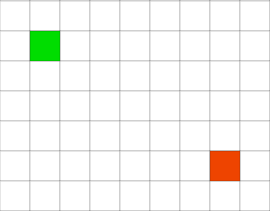
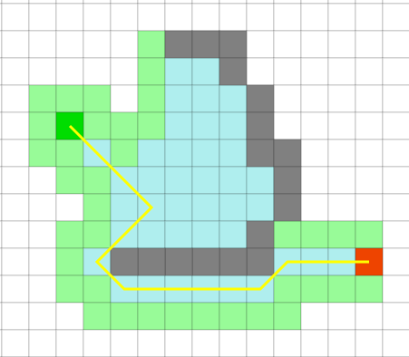
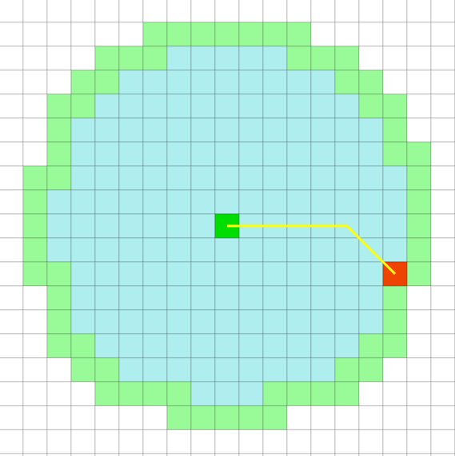
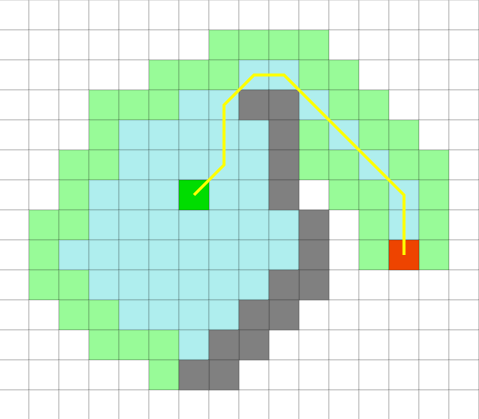
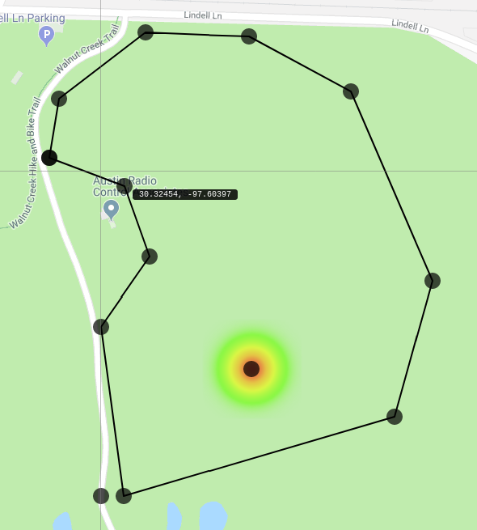
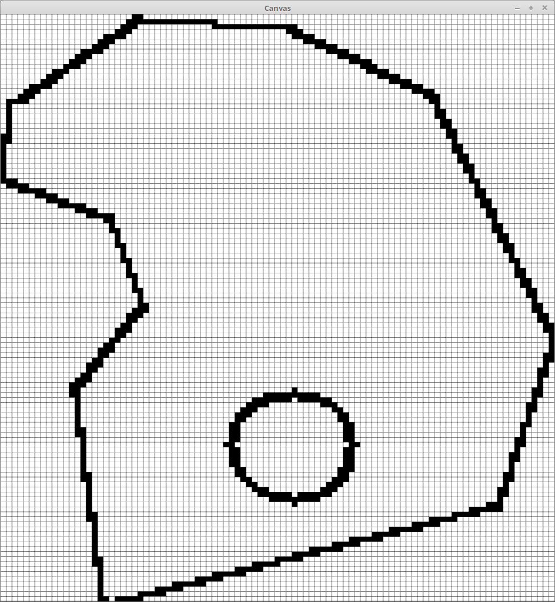

Introduction
This guide gives an introduction to the pathfinder library, a Rust library built for obstacle avoidance. This guide will walk through the theory behind the algorithms and their implementation details.
Background
This section covers the basic definitions and algorithms used in graph theory.
References
extensive write up on various pathfinding algorithms: https://www.redblobgames.com/
visualization: https://qiao.github.io/PathFinding.js/visual/
Basic graph theory
This section covers the common definitions and ideas used in graph theory
Definitions
Graph
an ordered pair (V, E) where V is the set of nodes and E is the set of edges
Undirected graph
a graph where the edge between two nodes are the same regardless of the direction. I.E edge (x, y) is equivalent to (y, x)
Directed graph
a graph where the the edge between two nodes are distinguish by their orientation
Weighted graph
a graph where the edges have numerical weights indicating preference
Connected graph
a connected graph is a graph where any node is reachable from every other node
Cycle
a cycle in a graph means there exists a path that leads back to the starting point. In undirected graph, a cycle must contains at least 3 nodes
Acyclic graph
an acyclic graph contains no cycles
Order
the order of a graph is denoted by |V| and represents the number of nodes
Size
the size of a graph is denoted by |E| and represents the number of edges
Tree
a tree is an acyclic connected undirected graph
Rooted tree a tree where a node is indicated as the root node and all other nodes are define in relation to the root
Leaf node a node in a rooted tree with no children
Graph representation
A graph needs to be somehow represented in memory. The main representations are adjacency list and adjacency matrix.
Adjacency list
Each node keeps track of their connected neighbor and their weights. Good for sparse graphs.
Adjacency matrix A matrix keeps track of what whether an edge exists between two nodes. Good for dense graphs. Additionally, looking up if two nodes are connected takes constant time at the cost of taking up more space.
Heuristics
To calculating the shortest path, we need to accurately estimate the distance between two nodes. The common heustrics used for this purpose are Manhattan distance, Euclidean distance, and Diagonal distance.

Manhattan distance - the sum of horizontal and vertical offset between two points on a grid
\( D = dx + dy \)
Ex: \( dx + dy = 6 + 4 = 10 \)
Euclidean distance - the actual distance between two points on a grid using Pythagorean Theorem
\( D = \sqrt{dx^2 + dy^2} \)
Ex: \( \sqrt{dx^2 + dy^2} = \sqrt{6^2 + 4^2} \approx 7.2 \)
Diagonal distance - same as manhattan distance, but allows diagonal movements
\( D = (dx + dy) + (C - 2) * min(dx, dy) \), where C is cost of moving diagonally
if \(C = 1\), this is known as Chebyshev distance
Ex: \( (dx + dy) + (C - 2) * min(dx, dy) = (4 + 6) + (1 - 2) * min(4, 6) = 6\)
if \(C = \sqrt{2}\), this is known as Octile distance
Ex: \( (dx + dy) + (C - 2) * min(dx, dy) = (4 + 6) + (\sqrt{2} - 2) * min(4, 6) \approx 7.7 \)
Greedy Algorithm
Stems from depth first search. Depth first search looks at a child of a node and follow it until it reaches the a leaf node, then follows another neighbor until all neighbors have been visited. The greedy algorithm looks at all connected node and chooses the one closest to the target node based on a heuristic and navigate down that node.
Pseudocode
unmark all nodes
let S be a stack
S.push(start)
while S is not empty
current_node = S.pop()
if current_node == end
return path
end if
if current_node is not marked:
mark current_node as visited
for all neighbor n of current_node
n.parent = current_node
n.cost = heuristic(n, end)
end for
order current_node.neighbors by cost and push to S
end if
end while
Problem
Fast, but can get stuck on obstacles and therefore not guaranteed to find shortest path.

Breadth First search
Breadth first search starts at a node and evaluate all of its immediate neighbors before evaluating their children. In other words, it starts to a node and evaluate all children one node away from it, then evaluate all children two nodes away from it, and so on.
Dijkstra's Algorithm
Dijkstra build on top of breadth first search but accounts for movement cost to prioritize path with lower cost but redirecting parent of a node if there is a shorter alternate path to it. For example, node 1 is originally parent of node 2 (i.e node 2 came from node 1). If, while evaluating node 3 neighboring node 2, the algorithm finds the cost of moving from node 3 to node 2 is lower than that of its current cost, node 2's parent would be changed to node 3 and its cost updated accordingly.
Pseudocode
for all node n
n.cost = INFINITY
end for
let Q be a queue
Q.push(start)
while Q is not empty
current_node = Q.pop()
if current_node == end
return path
end if
for neighbor n of current_node
if cost(current_node, n) < n.cost
n.parent = current_node
n.cost = cost(current_node, n)
end if
Q.push(neighbor)
end for
end while
Problem
guaranteed to find the shortest path, but takes much longer

A* Algorithm
Combine greedy and dijkstra's algorithm to gurantee both speed and correctness. Works by calculating cost of a node by combining movement cost and heuristic estimating the distance to target.
\( f(n) = g(n) + h(n) \)
where g(n) is the cost of the shorest path from start to n, and h(n) is a heuristic function estimating the cost of the direct path to the target.
Pseudocode
unmark all nodes
for all node n
n.cost = INFINITY
end for
let S be a set
S.push(start)
while S is not empty
current_node = node in S with lowest cost
if current_node == end
return path
end if
mark current_node as visited
for neighbor n of current_node
if neighbor is marked
continue
end if
cost = cost(current_node, n) + heuristic(n, end)
if cost < n.cost
n.parent = current_node
n.cost = cost
end if
S.push(neighbor)
end for
end while

Pathfinder Library
The section covers the overall structure of the pathfinder library and the detailed implementation of the algorithm.
Exposed API
The library is structured as a Pathfinder object which must be initialized before it can process path finding requests. For initialization, it requires the following parameters:
grid_size: denotes how large a node in the grid is in metersflyzones: a 2D vector of Point object representing the flyzones due to the possibility of multiple flyzonesobstacles: a vector of Obstacle objects
The following parameters are exposed through getter/setter methods
grid_size: denotes how large a node in the grid is in metersbuffer: a buffer radius that's added to obstacles radius in metersmax_process_time: amount of time to adjust the path before returning in secondsfly_zones: the list of flyzones boundaryobstacles: the list of obstacles
The main functionality of the pathfinder library is the get_adjust_path method, which takes the plane position and a list of waypoints and returns a modified list of waypoints that circumvents obstacles.
Library Structure
The code base is divided into several files for organizational purposes. They are:
lib.rs- contains the definition for the Pathfinder struct and implementation of the obstacle avoidance algorithmsnode.rs- defines the node struct which represent a node in the grid and contains methods to convert between node and point representing physical coordinates.obj.rs- defines other data structures such as Plane, Obstacles, Point, and Waypoint for API interface.util.rs- contains utility functions
Map Representation
Real world locations are in latitude and longitude, but A* has to operate on a graph which requires converting the map to a grid.
Since the plane can never be outside of the flyzone, we leverage this fact to find the lowest latitude and longitude of the flyzone and set that as the origin of the grid. Henceforth, all points can be converted to a node by calculating the horizontal distance and vertical distance using the haversine formula, a formula that determines the great-circle distance between two points on a sphere. Then, dividing the distance by the preset grid size will grant us the coordinate of the corresponding node.

To keep track of obstacles, we keep a hashmap of nodes which can be looked up in constant time. Since all obstacles are circular, we calculate the perimeter nodes and add them to the obstacle list. Flyzones are treated as obstacles as well and can be represented by generating lines between points and adding nodes along said lines to the obstacle list.

Data structures
Hash table
Hash table operates on the principle of a lookup table. Given an array of integers, you can make the integer themselves the index of the array and skip there to check if it exists. For instance, given an array of unsigned integers [1, 3, 5], you can make an array of booleans with contents [false, true, false, true, false, true]. Then, checking if 1 is in the array is as simple as checking if array[1] is true. With this, element look up can be done in constant time regardless of the size of the array.
However, if one was to insert 7 into the array, he would encounter an index out of bounds exception. This can be remedied by a hash function, which essentially converts a number down to the length of the array. Additionally, instead of having booleans as values, linked lists would be used instead. An extremely simple hash function in this case could be n mod 6, which would group 7 under array[1]. It can then be looked up in the linked list.
Binary heap
A binary heap is a special case of a complete binary tree. There's many types of binary heap, but the most common ones are min heap and max heap. In a min heap, the children of a node is always greater than the value of the node. A max heap is similar except the children is always less than the its parent. Through this structure, the root of the heap is always the minimum (maximum) of the tree and can be retrieved quickly.

Implementation Details
All obstacles are stored in a hashset such that a node can be looked up in constant time. Through this, while navigating through the grid, pathfinder can simply check if a node is in the obstalce list to see if the node is accessible. All nodes that have been evaluated are stored in the close_list hashset while all nodes that are yet to be evaluated but have been discovered are stored in the open_list hashset. Nodes in open_list are also stored in a binary heap named open_heap to retrieve the node with the minimum cost in \(O(log n)\) time.
To generate waypoints from the path found, we take advantage of the fact that the shortest path will always border an obstacle, and mark nodes bordering such an obstacle, or critical nodes. Then, the critical nodes can be aggregated to generate the waypoints.
Influencing the path
The generated path can be influenced with additional modifiers in the cost function. For instance, by taking the cross product of the vector from start node to end node with the heading vector between the current node and its neighbor, we can add the result to the cost heuristic. Since the cross product between two parallel vectors is zero, this would cause the algorithm to favor direct paths over round about ones.
Future Goals
-
Modularity - Currently, alternate algorithms cannot be chosen easily. Therefore, there is plan for restructuring pathfinder to be more modular such that different algorithms can be chosen at run time.
-
Refinement - Furthermore, the current algorithm can continued to be refined to further optimize the generated path. For instance, the algorithm does not account for the current heading of the plane, so a more roundabout path would be indistinguishable from an equally long but more direct path.
-
New approach - Moreover, with the insight that the shortest path always border on obstacles and the fact that all obstacles are circular, we can take advantage of this and make each obstacle a node in the graph, and generate weighted edges between them based on line of sight and distance. This approach would completely eliminate the need to convert to a grid-based graph.